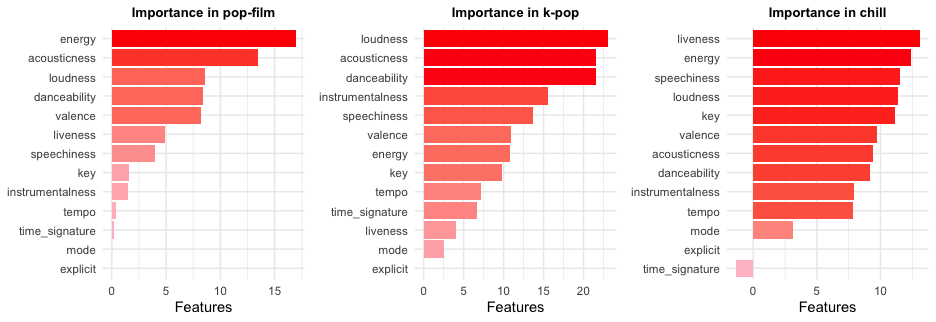
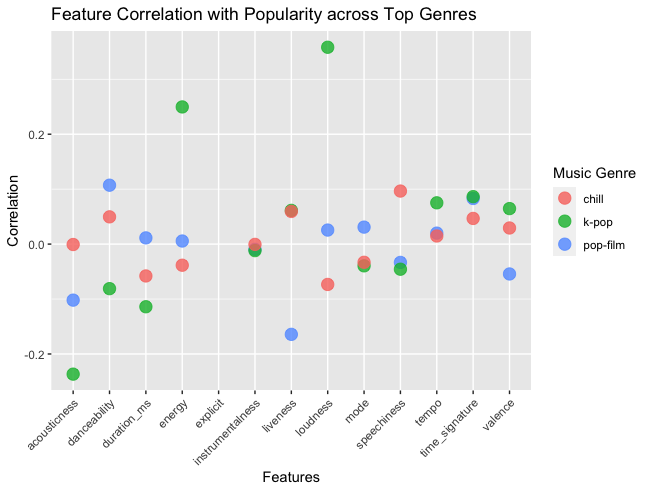
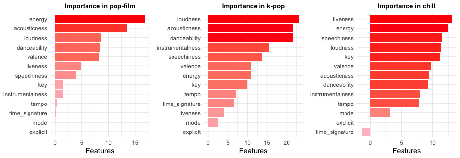
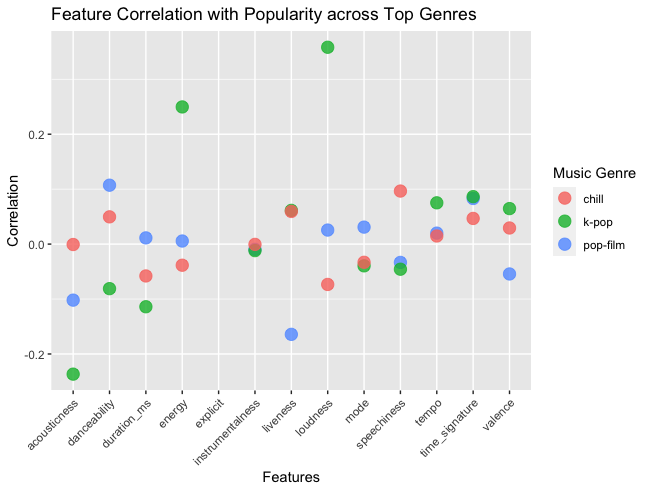

R Studio Code
Here is a snippet of the R code used in my analysis:
# Load necessary libraries
library(randomForest)
library(ggplot2)
library(doParallel)
library(dplyr)
library(packcircles)
library(cowplot)
library(gridExtra)
library(tidyr)
# Set random seed for reproducibility and register parallel processing
set.seed(123)
registerDoParallel(cores = 4)
# Data Preprocessing
data <- read.csv("./dataset.csv") %>%
select(-X) %>%
mutate(
track_genre = as.factor(track_genre),
explicit = as.numeric(explicit == "true"),
mode = as.numeric(mode),
key = as.factor(key),
duration_ms = ifelse(is.na(duration_ms), median(duration_ms, na.rm = TRUE), duration_ms),
danceability = ifelse(is.na(danceability), mean(danceability, na.rm = TRUE), danceability),
loudness = scale(loudness),
tempo = scale(tempo)
)
# Analysis of genre distribution and popularity
genre_distribution <- data %>%
count(track_genre) %>%
mutate(percentage = n / sum(n) * 100) %>%
arrange(desc(percentage))
ggplot(data, aes(x = popularity)) +
geom_histogram(binwidth = 5, fill = "blue", color = "white") +
labs(title = "Distribution of Popularity", x = "Popularity", y = "Frequency")
# Analysis of average popularity by genre with visualization
genre_popularity <- data %>%
group_by(track_genre) %>%
summarise(popularity = mean(popularity)) %>%
arrange(desc(popularity))
ggplot(genre_popularity, aes(x = reorder(track_genre, popularity), y = popularity, fill = popularity)) +
geom_col() +
scale_fill_gradient(low = "lightblue", high = "darkblue") +
labs(title = "Average Popularity by Genre") +
theme_minimal() +
coord_flip()
# Random Forest Analysis for Top 3 Genres
top_genres <- head(genre_popularity$track_genre, 3)
plot_list <- lapply(top_genres, function(genre) {
genre_data <- subset(data, track_genre == genre)
model <- randomForest(popularity ~ ., data = genre_data, importance = TRUE, ntree = 300)
importance_data <- importance(model)
importance_df <- data.frame(Feature = rownames(importance_data), Importance = importance_data[,1], check.names = FALSE) %>%
arrange(desc(Importance))
ggplot(importance_df, aes(x = reorder(Feature, Importance), y = Importance, fill = Importance)) +
geom_col() +
scale_fill_gradient(low = "pink", high = "red") +
labs(title = paste("Feature Importance in", genre), x = "Importance", y = "Features") +
theme_minimal() +
coord_flip()
})
# Display all plots using cowplot
plot_grid(plotlist = plot_list, ncol = 3, align = 'v', rel_widths = rep(1, length(plot_list)))
# Analyze top artists in each genre
top_artists <- data.frame()
for (genre in top_genres) {
genre_data <- subset(data, track_genre == genre)
top_artist <- genre_data %>%
group_by(artists) %>%
summarise(avg_popularity = mean(popularity, na.rm = TRUE), song_count = n()) %>% # 统计歌曲数量
arrange(desc(avg_popularity)) %>%
slice(1)
top_artist$track_genre <- genre
top_artists <- rbind(top_artists, top_artist)
}
print(top_artists)
selected_artists_data <- data %>%
filter(artists %in% top_artists$artists & track_genre %in% top_genres) %>%
select(artists, track_genre, explicit, danceability, energy, key, loudness,
mode, speechiness, acousticness, instrumentalness, liveness, valence, tempo, time_signature)
melted_data <- reshape2::melt(selected_artists_data, id.vars = c("artists", "track_genre"))
# Standarise Y axis
ggplot(melted_data, aes(x = variable, y = value, fill = artists)) +
geom_bar(stat = "identity", position = "dodge") +
facet_wrap(~ track_genre, nrow = 1, scales = "fixed") + # 修改 scales 为 "fixed"
theme_minimal() +
labs(title = "Top Artists' Music Feature Profiles Across Genres (Unified Y-axis)",
x = "Features", y = "Value",
fill = "Artist") +
theme(axis.text.x = element_text(angle = 45, hjust = 1),
plot.title = element_text(face = "bold", hjust = 0.5))
 


